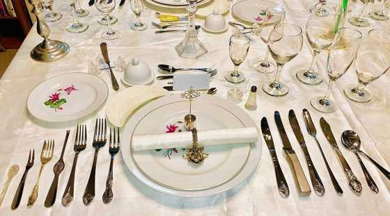
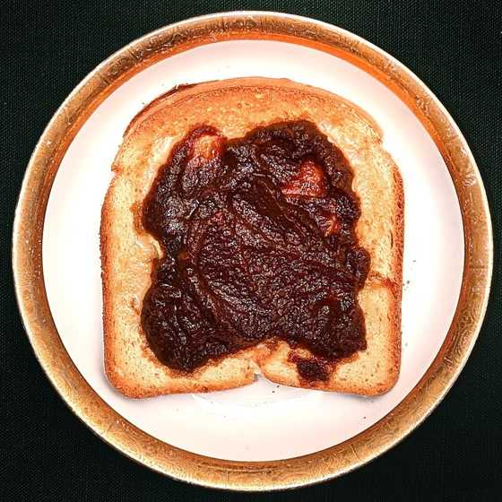
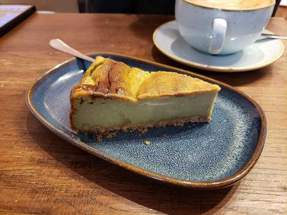
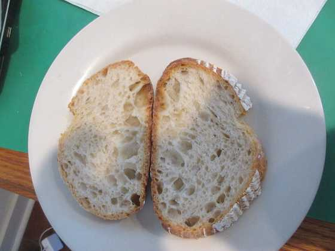

ABOUT
お店の由来と想い
店名の「assiette(アシェット)」はフランス語で「お皿」。お皿に盛りつけたスイーツを楽しんでほしい、という想いが込められていると報じられています。
- 2025年5月5日、伊那市西町にオープン。
- オーナーは伊那市出身の下島冴希さん。洋菓子店や和洋のレストランなど約18年の経験を重ね、「自分の店を持つことが夢だった」と語っています。
- 20歳のときにオーストラリアとフランスでワーキングホリデーを経験し、製菓の現場でも働いたそうです。
- お父さまが営む接骨院の一部を改装。壁の珪藻土塗りなどはご自身でも手がけ、奥のカウンターの椅子は伊那養護学校の生徒さんが作ったものと紹介されています。

出典: 伊那経済新聞、信濃毎日新聞デジタル、長野日報の報道。
MENU
メニュー
※掲載写真はフリー素材のイメージで、店舗の実際の様子・商品ではありません。

フレンチトースト
看板メニューとして紹介されています(写真はトーストのイメージ)。
価格 準備中
タルト
手作りのスイーツとして紹介されています。
価格 準備中
ショートケーキなどのケーキ
定番のケーキが並ぶと紹介されています(写真はイメージ)。
価格 準備中
カヌレ・焼き菓子
カヌレが「イチオシ」と紹介されています(写真はイメージ)。
価格 準備中
コーヒー・紅茶
ブレンドコーヒー、カフェラテ、アールグレイなど。
価格 準備中
皿にのったデザート
メレンゲのアイスクリームなど、皿を彩るデザートも(写真はイメージ)。
価格 準備中営業時間・定休日・価格の詳細: 準備中 電話: 準備中




VOICE
口コミ
イメージ例お皿に盛られたスイーツが可愛くて、ゆっくり過ごせました。
イメージ例季節のフルーツのフレンチトーストが楽しみで、また行きたいです。
イメージ例手みやげのスイーツも選べて、散歩の途中に寄りやすい雰囲気でした。
※上記は制作側が作成したイメージ例で、実際のお客様の声ではありません。
ACCESS
アクセス
〒396-0026 長野県伊那市西町5294-4
営業時間・定休日・電話: 準備中
Instagram @assiette_cafe_sweet
写真クレジット
写真はフリー素材のイメージであり、店舗の実際の様子ではありません。
- images/choco.jpg「Piece of chocolate cake on a white plate decorated with chocolate sauce」 / 作者: Daria Yakovleva / CC0 1.0 / Wikimedia Commons
- images/plate.jpg「Empty table setting plate fork knife (42585288225)」 / 作者: Stock Catalog / CC BY 2.0 / Wikimedia Commons
- images/toast.jpg「Toasted oatmeal bread with butter and apple butter - Massachusetts」 / 作者: Daderot / CC0 1.0 / Wikimedia Commons
- images/cake.jpg「Baileys Chocolate Cake - Cafe Coho 2026-01-08」 / 作者: Andy Li / CC0 1.0 / Wikimedia Commons
- images/cup.jpg「Corn tea cup」 / 作者: KQuhen / CC BY-SA 4.0 / Wikimedia Commons
- images/table.jpg「13 course table setting American angled view」 / 作者: Hopefulromntic21 / CC BY-SA 4.0 / Wikimedia Commons
- images/chiffon.jpg「Colourful chiffon cake」 / 作者: Roozitaa / CC BY-SA 4.0 / Wikimedia Commons
- images/bread.jpg「Treats from Breads on Oak bakery, New Orleans, 16 December 2025 - Fresh bread slices」 / 作者: Infrogmation / CC BY-SA 4.0 / Wikimedia Commons
- images/pancake.jpg「Pancakes on plate, July 2023」 / 作者: Infrogmation of New Orleans / CC BY-SA 4.0 / Wikimedia Commons
- images/tart.jpg「Strawberry tart by Kirti Poddar」 / 作者: Kirti Poddar / CC BY 2.0 / Wikimedia Commons
- images/cheese.jpg「Pistachio cheesecake - Blossom Cafe Bar 2024-07-15」 / 作者: Andy Li / CC0 1.0 / Wikimedia Commons
- images/walnut.jpg「A slice of coffee and walnut cake - Audit Room Café, Petworth House」 / 作者: Andy Li / CC0 1.0 / Wikimedia Commons